Nosso site foi feito para mostrar os tênis da nike e jordan mais marcantes tanto históricamente quanto atualmente. We love our demonikes.
Jordans
Jordans 1
Em 1984, onde os tênis All-star eram moda nas quadras da NBA, a Nike, que ainda não tinha grande visibilidade, precisava de algum jogador usando seus tênis, então, fecharam acordo com o até então, calouro da NBA, 3° escolha do draft, Michael Jordan, que anos depois seria considerado o maior de todos os tempos...
Após 1 ano de contrato da Nike com Michael Jordan e por pedido da marca, o designer Peeter Moore criou o modelo Air Jordan 1. O tênis era personalizado e atendia às exigências do que Jordan gostava em um tênis: ele queria um modelo que encaixasse no formato do seu pé com facilidade. O resultado foi o tênis de cano longo nas cores do Chicago Bulls.
O tênis atualmente conta com diversas collabs, junto com as marcas Dior, Off-White, Gatorade, Vogue, com o trapper estadunidense Travis Scott, entre diversas outras. O preço do produto varia muito dependendo de onde compra e qual colorway você compra, você consegue achar ele por 799,99 pra cima...
Jordans 3
1987-1988 foi um ano excelente para o desempenho do sábio Michael Jordan. Michael venceu o Slam Dunk contest, todos os MVP Star, All-Defensive First Team e Jogador Defensivo do Ano “. Através de todo este sucesso, ele estava usando o Air Jordan 3.
Peter Moore (que desenhou o Air Jordan I e ajudou no II) foi demitido da Nike, assim como Bruce Kilgore. Quando eles saíram, Peter e Bruce estava tentando convencer Michael a deixar Nike com eles, e a ótima notícia veio, Michael disse que não.
Agora Nike precisava de um novo designer para fazer o Air Jordan III. Então eles foram ao mundialmente famoso Tinker Hatfield. Seu nome é conhecido principalmente pela concepção Air Jordan III-XV, e também fazendo um retorno sobre o AJ XX, mas Tinker também desenhou alguns Nike ótimos também. Tinker e Michael trabalharam duro, conversavam entre si sobre as boas idéias, em que poderiam “trabalhar”.
Michael queria um tênis leve, com muita durabilidade. Assim, com o Air Jordan 3, ambos decidiram fazer um início médio, o topo médio sendo o primeiro a ser visto na linha Air Jordan. No modelo AJ III, Tinker colocou o famoso logotipo jumpman na parte de trás do sapato, e adicionando em um “print-elefant” na biqueira. Também foram os primeiros AJ III a ter uma unidade visível ar-sola.
As inspirações para o AJ III é o AJ I e II, o lance livre dunk, um elefante e por último, mas não menos importante Michael Jordan. O preço do produto varia muito dependendo de onde compra e qual colorway você compra, você consegue achar ele por 899,99 pra cima...
Jordans 4
Talvez o modelo mais durável da linha Jordan. Ele é praticamente inteiro feito de plástico o que o torna bastante flexível ao calça-lo. Seu design ganhou um detalhe na lingua do tênis, deixando-o mais triangular. É um típico modelo 8 ou 80. Ou você ama ou odeia. Este também foi o primeiro tênis Air Jordan a ter um lançamento global, além de aparecer em um filme do Spike Lee, transcendendo as quadras de basquete.
É uns dos modelos mais cobiçados por quem gosta de tênis ou basquete, com muitas colorways marcantes, como Bred, Raptors, Hot-lava, e é calro, suas collabs como, PSG, Off-White e o já citado trapper Travis Scott. É também um dos Jordans com mais detalhes, com seu cabedal sendo todo trabalhado com várias camadas que fazem o tênis ser um dos preferidos.
O preço do produto varia muito dependendo de onde compra e qual colorway você compra, você consegue achar ele por 899,99 pra cima...
Jordans 5
A Nike já havia entendido que para manter o sucesso da linha Air Jordan precisaria lançar um novo modelo a cada ano. Assim veio o Air Jordan 5 com um diferencial no cadarço, chamado de lacelooks. Esse modelo também faz referência ao seriado Prince of Bel Air (Um Maluco no Pedaço), em que Will Smith só usava tênis Air Jordan.
Tinker Hatfield inspirou-se no estilo de mordida de Jordan e, comparando-o a um avião de combate americano da Segunda Guerra Mundial, projetou o Air Jordan V com formas de dentes de tubarão na entressola. Emparelhado com uma sola clara, o sapato impregna uma ferocidade que lembra sua jogada implacável, voadora e veloz.
O preço do produto varia muito dependendo de onde compra e qual colorway você compra, você consegue achar ele por 899,99 pra cima...
Jordans 6
No ano de 1991, Michael Jordan vence a NBA junto com Chicago Bulls. Foi o primeiro título do clube e o primeiro da carreira de Jordan. Neste mesmo ano, Jordan se torna MVP (Most Valuable Player) da temporada e a partir daí sua carreira decola. No mesmo ano a Nike havia lançado o Air Jordan 6, o que não mudou muita coisa em relação ao Jordan anterior.
Na verdade o design muda um pouco por questão da parte traseira que Michael se queixava que incomodava seu calcanhar. O tênis com colaboração com o trapper Travis Scott mexeu tanto com os fãs e com a comunidade sneakerhead, que foi parar no pé do trapper na sua skin no jogo Fortnite.
O preço do produto varia muito dependendo de onde compra e qual colorway você compra, você consegue achar ele por 899,99 pra cima...
Jordans 11
Devido à primeira aposentadoria de Michael Jordan da NBA em 1993, a Nike tinha planos de interromper sua linha de assinaturas após o Air Jordan X. No entanto, enquanto todo mundo na Nike assumiu que a linha havia acabado, Tinker Hatfield estava trabalhando duro nos bastidores para criar o A Air Jordan XI espera que algum dia MJ retorne à quadra – uma aposta que valeu a pena para o designer.
A frase “construído como um tanque” é muito usada com tênis, mas o Jordan XI realmente empurrava o envelope de durabilidade. Embora seu brilhante couro envernizado e nylon possam parecer bons, o sapato foi construído para ser resistente, com ênfase em suportar o desgaste do jogo devido ao alto nível de jogo de MJ. Hatfield experimentou materiais como couro envernizado e nylon Cordura ao adicionar uma haste rígida de fibra de carbono para obter suporte adicional.
Este é considerado um dos modelos da linha Air Jordan que teve mais visibilidade ao redor do mundo, além de ser considerado um dos mais bonitos com um design clean e autêntico. O seu apelido é “clássico”, sendo combinado até com roupas sociais. Esse ano também marcou o lançamento do filme Space Jam em que Jordan contracena com desenhos animados da Looney Tunes e, como tudo que MJ fez, foi um sucesso. Junto a isso, os Bulls ganharam o quarto campeonato da NBA e Jordan foi eleito novamente como MVP.
O preço do produto varia muito dependendo de onde compra e qual colorway você compra, você consegue achar ele por 899,99 pra cima...
Nikes
Nike Cortez
O primeiro Nike foi o Nike Cortez. O tênis era super tecnológico com seu cabedal de nylon para manter os pés secos. O manual que vinha com o tênis prometia que você podia correr 3 km com ele. Sem o Cortez, nada teria existido.
O Cortez na verdade é uma versão do tênis Onitsuka Tiger Corsair que ganhou o direito de ser lançado com a marca Nike após uma ação na justiça. No início você não conseguia diferenciar a Onitsuka e a Nike. Tinham o mesmo cabedal, a mesma sola, e as mesmas cores. Alguns tinham até os mesmos nomes…
Bill Bowerman(um dos dois criadores da nike) criou esses tênis para a sua equipe de corrida na Universidade de Oregon. Há uma história famosa que diz que Bill Bowerman destruiu a máquina de fazer waflle da esposa testando vários desenhos para tração na borracha, e isso deu certo, já que o formato da sola do tênis fez ele ser melhor para a corrida, não o deixando escorregar, um tiro no escuro que aconteceu a 45 e certamente mudou todo o mercado de calçados.
O preço do produto varia muito dependendo de onde compra e qual colorway você compra, você consegue achar ele geralmente por 329,99 pra cima, porém em geral, o modelo é bem barato...
Air Force
Impossível falar deste tênis sem fazer um texto. Um dos tênis mais emblemáticos da Nike, o Air Force 1 foi lançado há 36 anos e é o modelo com maior número de versões da história. Em 1982, quando surgiu sua primeira versão, ele era totalmente voltado aos jogadores de basquete, com cano alto, cinta ao redor do tornozelo e ajuste fino.
Já no ano seguinte, o modelo foi revisitado e lançado com os canos baixos, desta vez menos com cara de basquete e mais pensado para o dia a dia.
A história desse tênis quase acabou pouquíssimo tempo depois, ainda em 1982, em meio aos rumores de que a marca descontinuaria o modelo no mercado. O que reverteu a situação foram os pedidos do público e dos próprios lojistas, especialmente na cidade de Baltimore. E então, novos modelos surgiram, com outras cores e detalhes mais modernos.
Foi só em 2001 que o primeiro modelo feminino, disponível em tamanhos menores, foi lançado. Sim, demorou um bocado, mas as mulheres logo foram conquistadas pelo tênis. No mesmo ano as primeiras versões colaborativas foram anunciadas.
Em 2010 o Air Force ganhou versões mais tecnológicas e visualmente mais diferentes. Foi o ano de surgimento dos modelos Foamposite, Hyperfuse, Liquid Metal e Flyknit. Mais tarde, em 2014, ele ganhou de vez o mundo na moda e fez suas primeiras aparições em desfiles, com criações ainda mais ousadas e colaborações com nomes do meio.
No ano passado, o modelo celebrou 35 anos e, por isso, a marca voltou às origens, renovando a clássica versão na cor branca e de aparência mais esportiva. Já neste ano, foi a vez dos tênis ganharem um solado que brilha no escuro, em uma das versões mais inusitadas lançadas até hoje.
O preço do produto varia muito dependendo de onde compra e qual colorway você compra, você consegue achar ele geralmente por 499,99 pra cima...
O Tinker Hatfield criou em 1987 as Air Max 1 como sendo os primeirss tênis da Nike a incluir uma câmara de ar visível na sola. O seu sucesso foi incrível e, dois anos depois, em 1989, chegaram as Air Max II (hoje em dia mais conhecidas como Air Max Light).
Depois destes dois ícones, muitos se perguntavam se Hatfield seria capaz de se superar novamente. Podia voltar a desenhar umas sapatilhas que marcassem o rumo do calçado desportivo? Com a mudança de década, e já em 1990, os seguidores da cultura de sneakers procuravam conforto e estilo nas suas sapatilhas de running.
O Tinker Hatfield aproveitou esta tendência para criar o terceiro modelo da coleção Air Max. Uma sola mais grossa, uma câmara de ar no tacão, um aspeto mais polido… Assim nasceram as Nike Air Max 90. Anos e anos depois muitas versões foram feitas,como Air Max 95, 97, etc. E hoje é uma das linhas de tênis mais vendidas da Nike.
Os valores desses tênis depende do modelo que você compra, a colorway e tamanho, geralmente são preços um pouco mais elevados, na faixa dos 499,99...
Originalmente lançado em 2017, o tênis Vapormax é um dos designs mais estranhos que a Nike já lançou.
Para entender completamente o motivo, no entanto, temos que percorrer todo o caminho até o primeiro Air Max.
Inicialmente, a simples proposta de mostrar aos clientes o tubo de ar na sola era o tipo de ideia de que as pessoas interessadas em manter seus empregos não falavam muito alto no escritório da Nike.
“Foi amplamente discutido que eu tinha ido longe demais”, disse o criador do tênis, Tinker Hatfield, em seu episódio do documentário da Netflix, “Abstract: The Art of Design”.
“As pessoas estavam tentando nos demitir.” Essas pessoas ficariam chocadas com o Nike Vapormax: um tênis que parece ter sido inflado até que bolsões de ar começaram a se romper.
Enquanto o Air Max 1 dava aos clientes uma pequena amostra da tecnologia “Air”, o Vapormax revelou tudo. O preço do calçado depende do tamanho, podendo ser encontrado no mínimo a 599,99 e geralmente a 999,99 ou 1.299,99.
A empresa de artigos esportivos Nike foi a primeira a apresentar o conceito de tênis de molas. Conhecida por inovar e por estar sempre em busca de soluções para os esportistas, a empresa apresentou ao mundo no ano 2000 o Nike Shox, primeiro calçado com amortecimento em molas de aço que surgiu após análises rigorosas dos designers da empresa, que avaliavam as condições de treino dos atletas praticantes de corrida.
A ideia de produzir um tênis com esse tipo de amortecimento surgiu em 1984, quando os designers da Nike tiveram a ideia de colocar na entressola dos tênis um componente que ajudasse a impulsionar a velocidade e aproveitasse o esforço dos esportistas.
Observando os movimentos dos atletas, os designers avaliaram as dificuldades dos corredores que forçaram, repetidamente, o calcanhar durante os percursos. A partir disso, surgiu a ideia de criar um sistema de rebote elástico no calçado. Basicamente, era um esquema em molas de aço criado para aumentar a velocidade e reduzir o desconforto que ficou conhecido como “Tecnologia Shox”, mas que ainda precisava de ajustes para atender às expectativas de desempenho.
Foram 16 anos de testes e estudos para desenvolver um calçado com molas e com entressola de espuma que distribuísse de maneira uniforme a energia produzida pelo corredor e devolvesse essa energia a cada pisada. Em 2000, finalmente a Nike apresentou o resultado do excelente trabalho, proporcionando os benefícios da Tecnologia Shox em um calçado atrativo e com um design diferenciado.
O preço do calçado depende do tamanho, podendo ser encontrado por 349,99 para cima...
Nike Adapt's
Quem assistiu o filme "De Volta Para o Futuro 2", certamente se encantou com as bugigangas eletrônicas apresentadas no (então) futuro de 2015, incluindo um tênis que se amarra sozinho, ajustando os cadarços ao pé do protagonista Marty McFly. A Nike, foi a dona daquele "merchan" no filme. O que nem todo mundo sabia é que ela estava realmente empenhada de tornar aquilo realidade O processo de criação desses sapatos foi resultado de muitos testes de engenharia. Primeiro tentaram uma bota de snowboard com um gerador externo.
A partir de 2013, testaram uma dúzia de outras versões, que tinham o objetivo de incorporar todos os componentes técnicos em um espaço bem pequeno. Em 2015, chegaram ao produto final.
Quando você calça algum desses tênis, o calcanhar do usuário ativa um sensor, e o sistema se ajusta automaticamente. Há dois botões na lateral para apertar ou afrouxar a pressão do cadarço até chegar ao seu idealUm pequeno motorzinho eletrônico na sola é o "coração" do calçado. Ele traz uma série de peças que lembra muito um celular: um processador, bateria de 505 mAh, giroscópio, acelerômetro, módulo Bluetooth, motor mecânico, luzes, sensor de pressão, sensor de toque capacitivo, sensor de temperatura e bobina de carregamento sem fio.
A tecnologia de aperto depende de um único cabo que passa pelo motor. Para que o sapato aperte, o motor puxa o cabo como um carretel. O sapato vem com um carregador próprio, com entrada USB, e pode ser energizado em qualquer tomada. O carregamento leva cerca de duas horas. Imagem: Divulgação/Nike O Adapt BB vêm com conectividade Bluetooth para que os usuários possam apertar e soltar seus sapatos a partir de apps de celular. Eles podem até escolher a cor que os tênis emitem quando estão no modo de aperto.
Outra vantagem do BB é que pode ser carregado em um tapete, como os carregadores "sem fio" dos celulares mais modernos. Cada um dos tênis tem uma bateria estimada para durar de 10 a 14 dias com uma única carga, e atualmente temos o primeiro Jordan com essa tecnologia, o Jordan 11 Adapt.
Esses tênis são bem caros com preços minimos geralmente na casa dos 1.499,99...
Nike React's
A espuma Nike React foi desenvolvida com a colaboração de químicos e engenheiros mecânicos que, após 400 combinações e processamentos químicos e cerca de 2.000 horas de testes no Nike Sports Research Lab (Laboratório Nike de Pesquisa em Esportes), descobriram quais seriam os melhores ingredientes para geral o melhor resultado possível e que, segundo afirma a empresa, basicamente consiste em um material macio para um amortecimento leve e um material rígido para garantir retorno de energia e durabilidade.
Claro, cada material é desenvolvido de acordo com o esporte a que é destinado. No caso da espuma Nike React, o basquete: um esporte que requer dos atletas mudanças rápidas e constantes de direção, alterações de velocidade e, claro, saltos sem aviso prévio. Características que a tecnologia Nike React consegue atender, pois fornece amortecimento e estabilidade.
Se pensarmos bem, quando praticamos corridas nossas necessidades não são lá tão diferentes dos jogadores de basquete. Mas, mesmo assim, a espuma voltou ao laboratório para que pudesse ser testada segundo a perspectiva das necessidades de quem corre!
Então, para que a espuma fosse incorporada aos calçados da linha de corrida, os projetos para desenvolver uma entressola que atendesse de forma específica aos corredores e corredoras foram baseados nos dados coletados em laboratório e resultantes de atletas em movimento. Com isso, de acordo com a Nike, foi possível obter, por exemplo, mapas de pressão que mostram de forma precisa onde os atletas precisam de suporte e, assim, permitir a otimização total do amortecimento e da tração.
O preço do calçado depende do tamanho, podendo ser encontrado por 249,99 para cima...
Nike Court's
A Nike dedicou uma coleção ao ténis. A NikeCourt serve para qualquer evento relacionado com este desporto, com soluções de calçado e vestuário desenhadas tanto para os momentos de treino, como para a performance em campo e ainda para o dia a dia fora deste desporto.
Cada peça foi inspirada nos conhecimentos dos atletas e inspirada pelos seus estilos de vida, como é o caso dos que figuram na campanha - Rafael Nadal, Maria Sharapova ou Serena Williams são apenas alguns exemplos.
Com o vestuário de treino Nike Court os atletas ficam equipados para sessões de treino intensas, mas também as noites passadas dentro do campo de ténis pedem peças a rigor, com cores e padrões contrastantes. Estes contrastes são inspirados pela medição de forças notável nos jogos em Nova Iorque: a garra da cidade contra o glamour das celebridades presentes no torneio.
Os Nike Court são leves porém com cabedais levemente mais firmes, com solas que não derrapam em determinados solos, como os das quadras, para a boa movimentação. Os modelos da linha Court são uns dos mais baratos da Nike em sua gran maioria com preços fácilmente abaixo dos 599,99, podendo se achados por no mínimo 129,99, contando com em média 5 modelos acima dos 599,99...
Chuteiras Nike
A Nike sempre escuta a voz dos atletas em primeiro lugar. Por exemplo, depois de lançar a Nike Tiempo Premier, em 1994, e estabelecer uma parceria com a Seleção Brasileira, em 1996, a Nike decidiu criar uma chuteira digna da equipe mais vitoriosa do mundo – mais especificamente, inspirada no melhor jogador daquele período: Ronaldo. Ele sempre foi paciente dentro de campo, à espera do momento certo. Até que via sua oportunidade e dava o bote com velocidade e explosão em direção ao gol. Ou seja, ele era um “Mercurial”, capaz de ter alterações inesperadas nas quatro linhas.
Foi por isso que os designers da Nike se inspiraram nas pistas de atletismo para criar sua chuteira. Inicialmente, havia uma trava feita para as pistas, aliada ao cabedal da Nike Tiempo, com o objetivo de alcançar uma redução de peso sem precedentes numa chuteira. O material sintético KNG-100 passou a ser utilizado, além da espessura da placa ter sido reduzida de 3 mm para 1,75mm.
Essa busca dos atletas por leveza e velocidade continua até hoje. O preço das chuteiras é muito abrangente, com chuteiras de 89,99 à 1.329,99...
Nike Dunk's
Das quadras, o Dunk migrou para as ruas, ganhando releitura de cano baixo e
voltando ao mercado, a partir do pedido popular, primeiro no Japão, anos
depois de ser descontinuado pela fabricante.
No Japão, estabeleceu-se uma relação com a moda das ruas, enquanto, nos
Estados Unidos, os skatistas descobriram e adotaram o modelo em suas
sessões, conexão institucionalizada pela Nike em 2002, com o lançamento do
Dunk SB - levemente alterado, com mais enchimento na língua e forração
interna, para as horas sobre o carrinho – tantas vezes usadas na clássica
parceria com a Supreme.
Em paralelo, a música sempre flertou com o Dunk, desde sua primeira aparição
na capa do EP “Black Leather”, de 1987, do The Mix Crew, o que culminou com
parcerias com nomes como Deftones, Dinosaur Jr., Wu-Tang Clan, DJ AM, Iron
Maden, De La Soul, e muitos outros.
Artistas plásticos muitas vezes usaram o tênis como plataforma criativa,
encontro materializado, por exemplo, na exposição “White Dunk”, em 2004, na
qual 25 artista japoneses usaram o tênis como uma tela em branco, criando
obras que passaram por Tóquio, Londres, Paris e chegaram a Nova York,
onde, pela primeira vez, o lançamento de um tênis chamou a atenção da mídia
pela confusão causada na frente da loja.
O Dunk em questão foi criado pelo designer Jeff Staple, que usou um pombo
para representar a cidade de Nova York e colocou mais de 500 pessoas na
porta da sua loja, à espera do tênis, hoje uma preciosidade. Você encontra o Nike Dunk com em média 799,99 , podendo chegar à 1,199,99
Nike Fly's
Sem dúvidas, o Nike Zoom Fly é uma silhueta que já caiu no gosto dos consumidores e está conquistando cada vez mais espaço no mercado esportivo e fashion, pois se trata de um tênis de performance, mas que carrega um design único e extremamente atualizado em relação ao que vemos normalmente nas lojas.
Falando rapidamente um pouco da criação desse tênis, ele nasceu a partir dos primeiros estágios conceituais de um projeto da Nike denominado BREAKING2, que tinha como objetivo levar um dos seus atletas a completar a maratona abaixo de duas horas.
Nessa tentativa (que infelizmente não deu certo), foi usado o Nike Vaporfly Elite, um tênis que você não pode comprar, mas que possui alguns irmãos bem semelhantes nas lojas. E um deles é justamente o Zoom Fly. A Nike apresentou este ano o Nike Air Zoom Alphafly Next%, tênis considerado pela marca o “mais rápido da história”. O lançamento será exclusivo para corredores já cadastrados no aplicativo Nike Running.
De acordo com a fabricante americana, a cor usada no lançamento será preta com detalhes em verde-neon. No mesmo dia, outro modelo, o Vaporfly Next%, voltará ao mercado nacional, também na cor de lançamento (predominantemente cinza com detalhes em verde). Diferentemente do Alphafly, o Vaporfly Next% estará disponível no e-commerce da marca.
Segundo a empresa, para os corredores que não conseguirem o Alphafly Next% no dia do lançamento, um novo lote com uma cor inédita está previsto para o dia 27 de agosto. Este disponível para o grande público via e-commerce.
O ano de 2017 marcou o universo da corrida quando a Nike, com um dos maiores corredores do mundo, o Eliud Kipchouge, estabeleceram um desafio de terminar uma maratona em menos de 2 horas, calçando o inédito Nike Vaporfly. Os anos passaram, o tênis evoluiu, ficando mais leve, mais rápido e quebrando diversos recordes nos pés de corredores do mundo todo.
Até chegar outubro de 2019, quando Kipchoge, em Viena, terminou o percurso de uma maratona em menos de duas horas calçando o protótipo do Nike Air Zoom Alphafly NEXT%. Por conta disso, o Vaporfly Next% foi investigado pela Federação Internacional de Atletismo por um suposto “doping tecnológico“, se tornando um tênis proibido pelos corredores... Os preços dos tênis com tecnologia Air Zoom pode ser bem alto, com preços em media a 699,99 chegando à 1.299,99...
Esses modelos estão sendo muito utilizados atualmente, M2K e Tailwind Iv dominam entre os jovens brasileiros por conta de suas aparências semelhantes aos estilos atuais, os dois modelos tem preços entre 499,99 e 699,99. Já o Joyride é um tênis de corrida, que utiliza o sistema de amortecimento mais recente da Nike, o preço é entre 319,99 e 699,99. O Nike Sb é uma linha de tênis mais formais da Nike, utilizado em espaços sociais, seu preço é por volta de 199,99...


 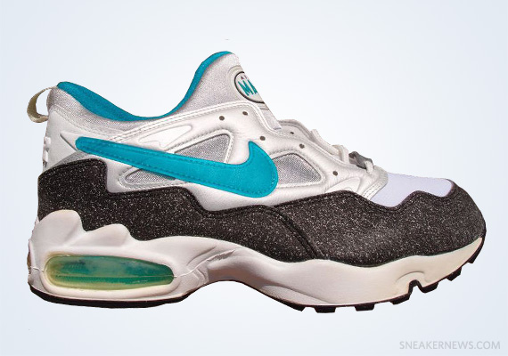
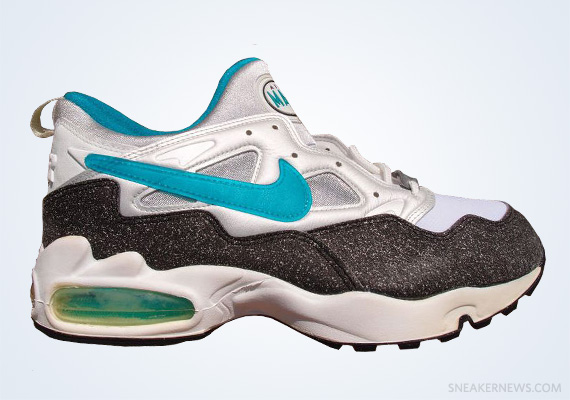


 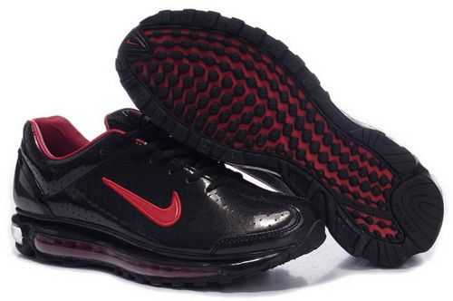
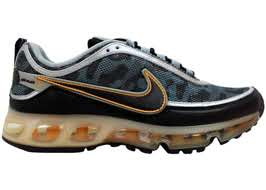
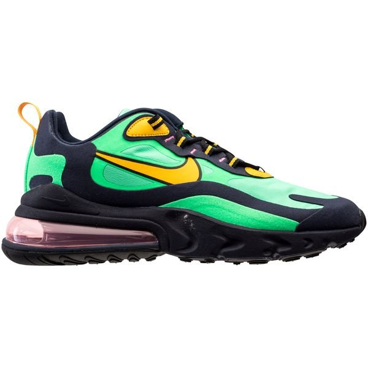
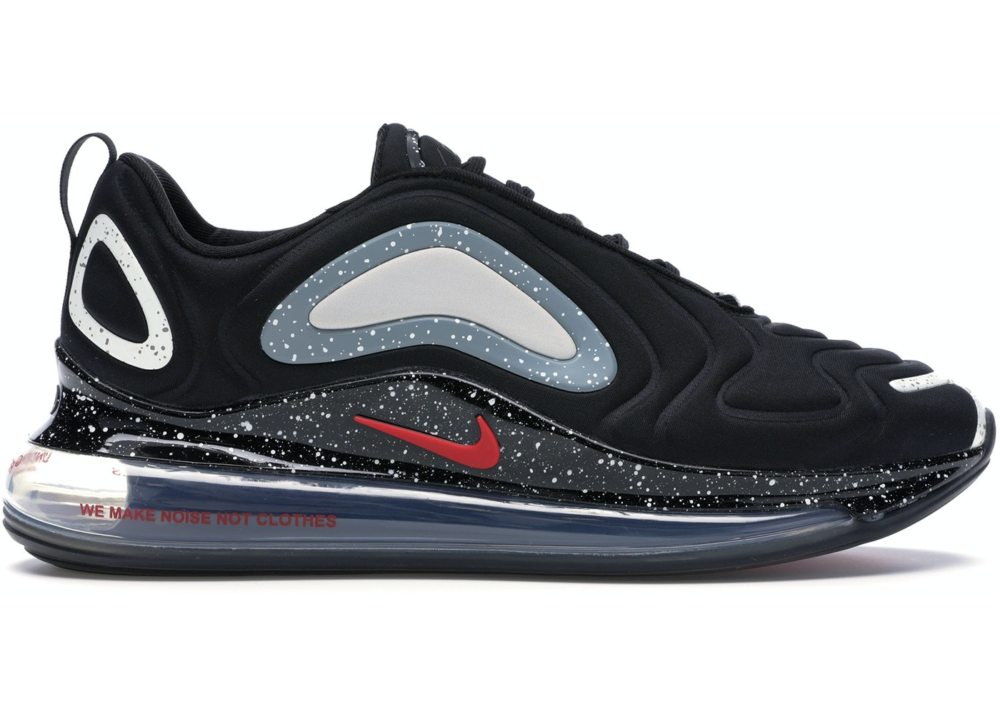
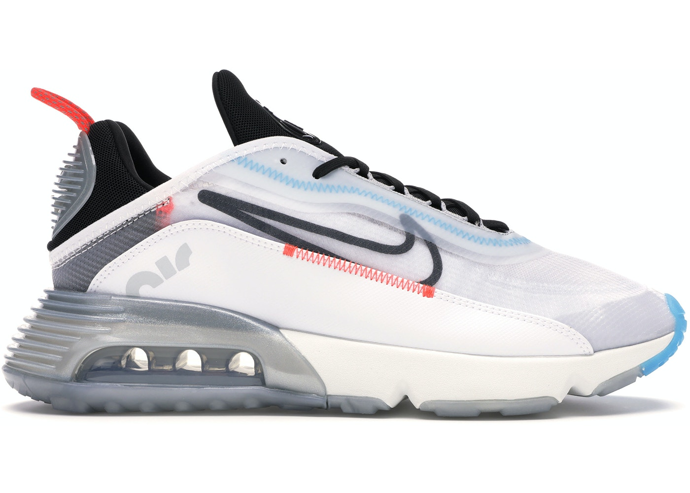
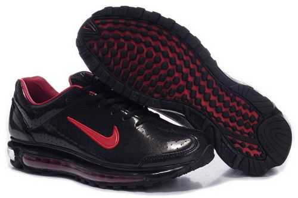
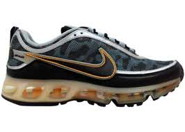
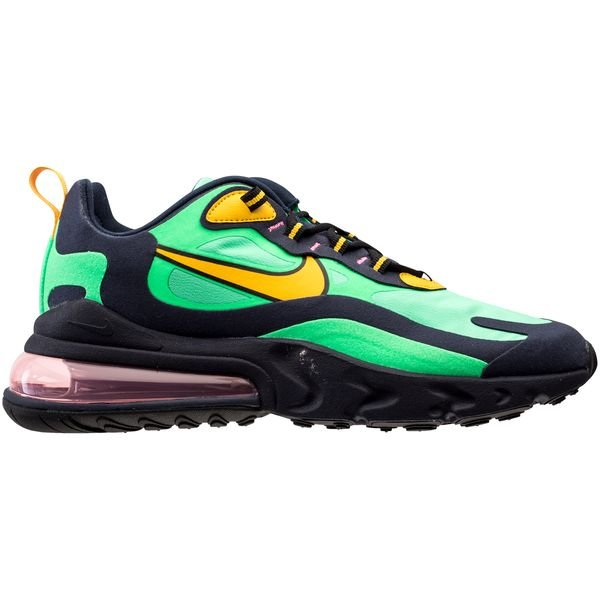
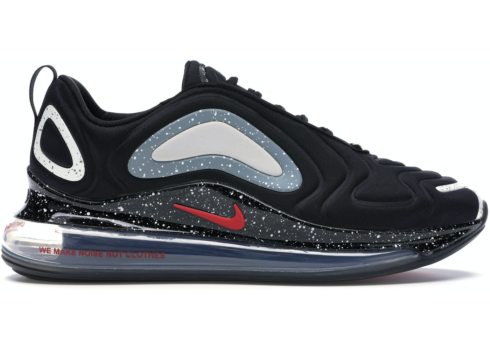
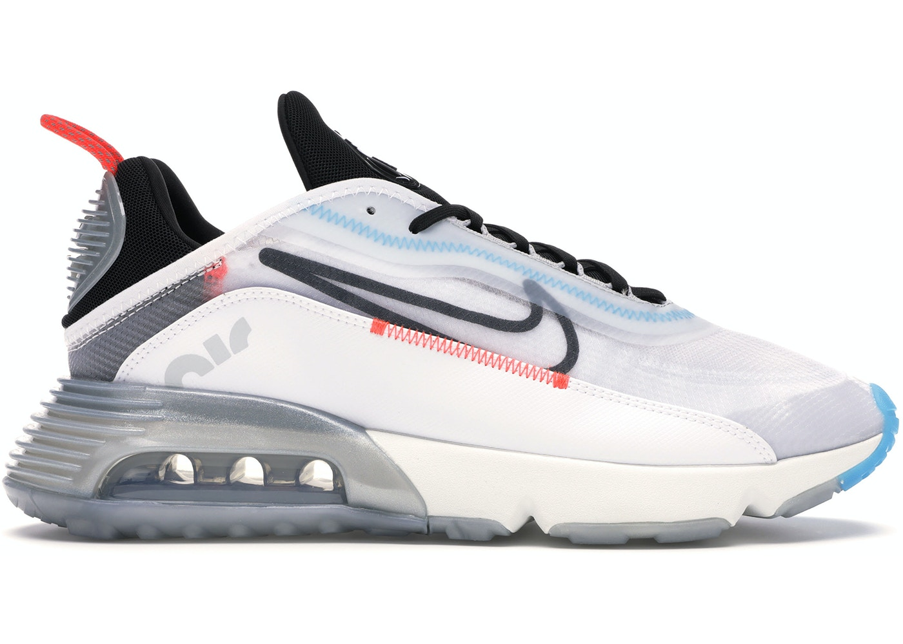

 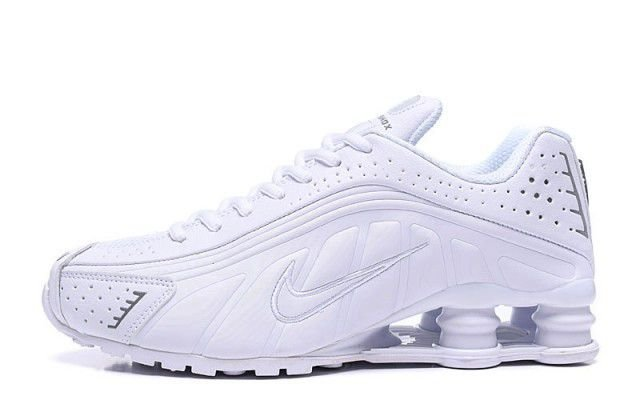
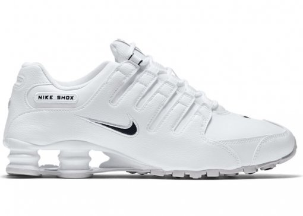
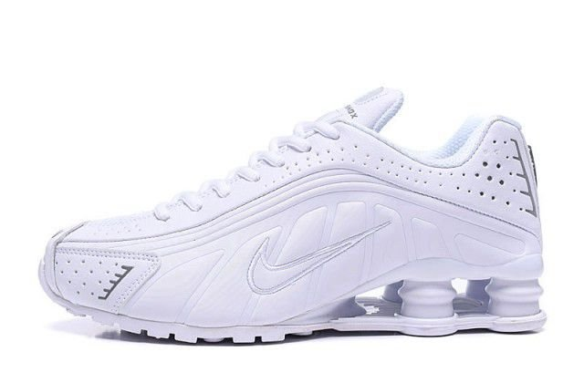
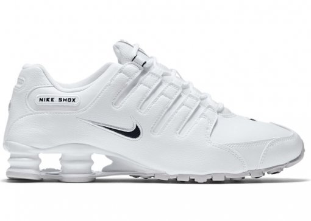


 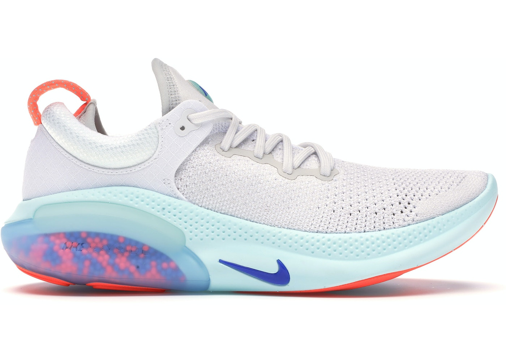
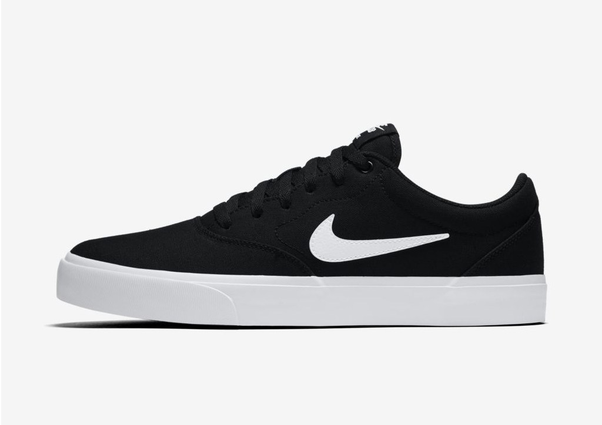
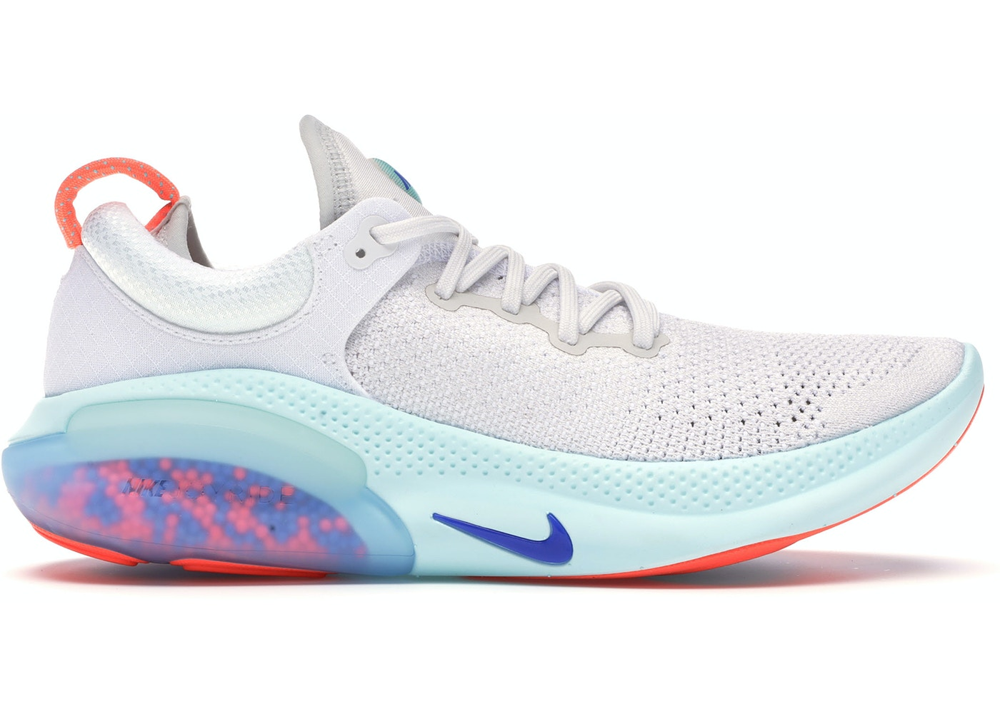
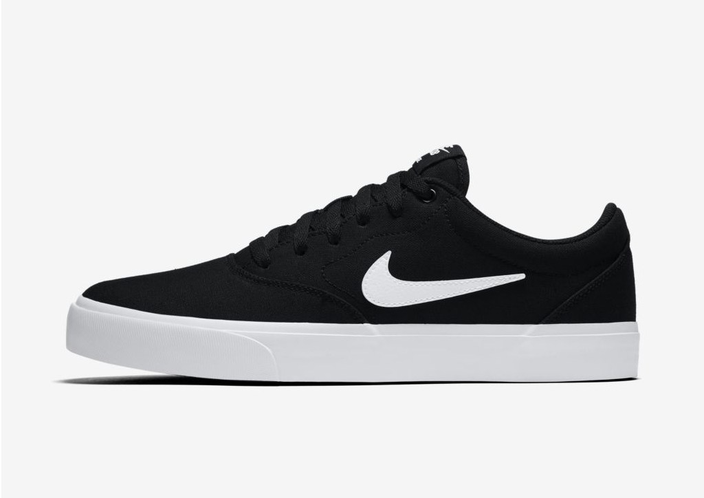